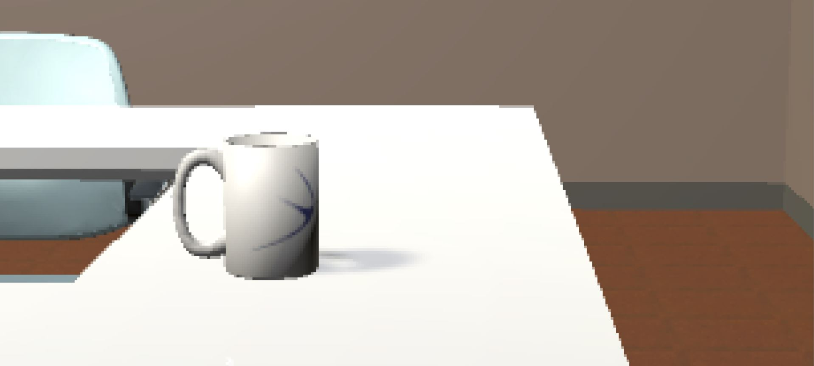
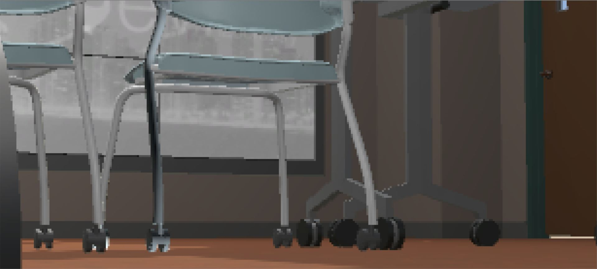
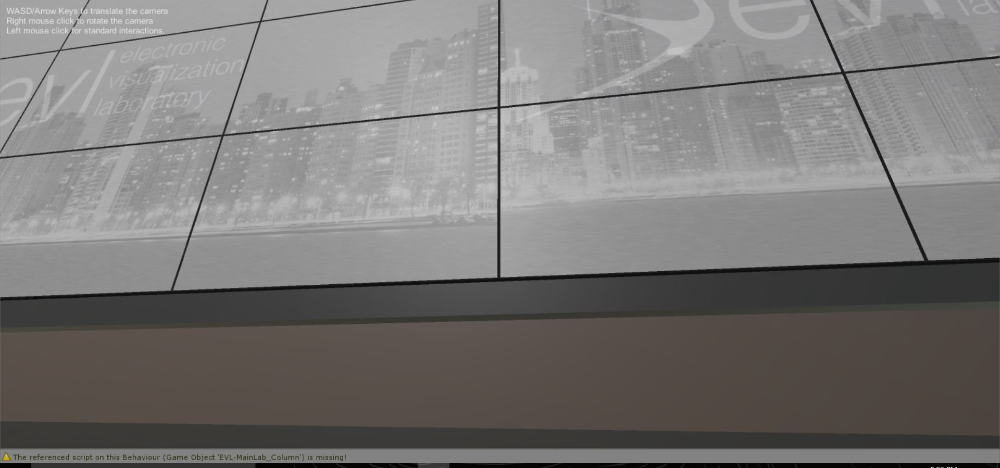

Walking Small
For this assignment, we were to change the scaling of the room in a way that caused our perspective to be one of a small being. From a technical standpoint, there were a few instances of quality loss. Many of the renderings seemed quite pixelated at this level of being zoomed in, and many of the textures were very zoomed in, resulting in a lower picture quality and a less “realistic” feeling.
As for the experiences that I had from being at a small scale in a familiar room, I actually did feel a different experience being in the room than I would have at a normal scale. What was interesting to me was seeing the difference in your field of vision being at a smaller scale. As a small scale, I unconsciously expected the same field of vision as I have now, but it was interesting to be small and have a chair leg take up most of the visual field. Also, the navigation button, which was small and easy to use at a small scale, became much harder to use at a large scale. The ability to change scaling and the effects it has on someone’s perspective can provide countless opportunities in a broad range of fields. Because the access to small details is opened up, it is much easier to edit things on a very accurate level. In addition, the ability to make someone much smaller can have an incredible amount of insights in the fields of science. Like with the example project that we saw in the cave, being able to see a brain mapping at a large scale can be useful for individuals trying to learn about very small objects that can only be observed at a microscopic level. As before, we used to have to only rely on pictures and 2d renderings of objects, we now have the option to make ourselves smaller and see scientific data through different perspectives.


